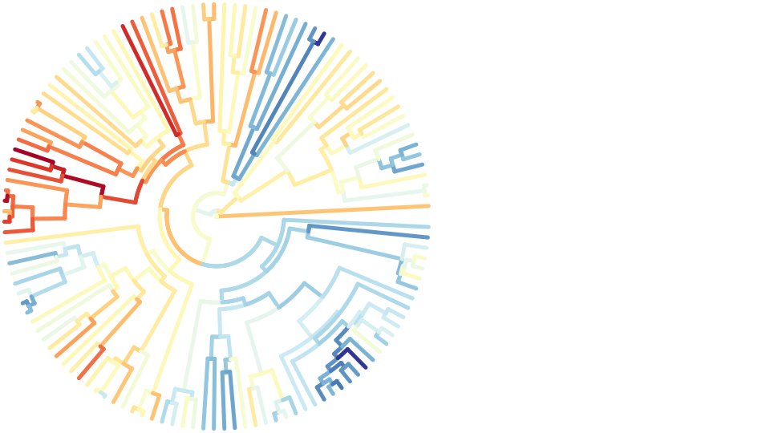
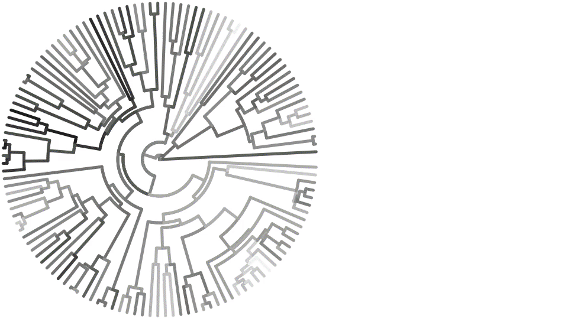

using Makie, MakieRecipesThe simplest example model
using MakieRecipes.RecipesBase
struct T end
RecipesBase.@recipe function plot(::T, n = 1; customcolor = :green)
markershape --> :auto # if markershape is unset, make it :auto
markercolor := customcolor # force markercolor to be customcolor
xrotation --> 45 # if xrotation is unset, make it 45
zrotation --> 90 # if zrotation is unset, make it 90
rand(10,n) # return the arguments (input data) for the next recipe
end
recipeplot(T(); seriestype = :path)
Testing out series decomposition
sc = Scene()
recipeplot!(sc, rand(10, 2); seriestype = :scatter)
recipeplot!(sc, 1:10, rand(10, 1); seriestype = :path)
Differential Equations
using OrdinaryDiffEq, StochasticDiffEq, DiffEqNoiseProcessA simple exponential growth model
f(u,p,t) = 1.01.*u
u0 = [1/2, 1]
tspan = (0.0,1.0)
prob = ODEProblem(f,u0,tspan)
sol = solve(prob, Tsit5(), reltol=1e-8, abstol=1e-8)
recipeplot(sol)
Matrix DiffEq
A = [1. 0 0 -5
4 -2 4 -3
-4 0 0 1
5 -2 2 3]
u0 = rand(4,2)
tspan = (0.0,1.0)
f(u,p,t) = A*u
prob = ODEProblem(f,u0,tspan)
sol = solve(prob, Tsit5(), reltol=1e-8, abstol=1e-8)
recipeplot(sol)
Stochastic DiffEq
f(du,u,p,t) = (du .= u)
g(du,u,p,t) = (du .= u)
u0 = rand(4,2)
W = WienerProcess(0.0,0.0,0.0)
prob = SDEProblem(f,g,u0,(0.0,1.0),noise=W)
sol = solve(prob,SRIW1())
recipeplot(sol)
Animating a differential equation solution
You can update arguments and attributes arbitrarily, and the recipe pipeline is rerun.
function lorenz(du, u, p, t)
du[1] = p[1]*(u[2]-u[1])
du[2] = u[1]*(p[2]-u[3]) - u[2]
du[3] = u[1]*u[2] - p[3]*u[3]
end
prob = ODEProblem(lorenz, [1., 5., 10.], (0., 100.), (10.0, 28.0, 8/3))
ρ = Node(28.0)
sol = @lift solve(remake(prob; p = (10.0, $ρ, 8/3)), Tsit5())
sc = recipeplot(sol)
ylims!(sc, -30, 70) # avoid jitter when animating
record(sc, "lorenz.gif", LinRange(0, 35, 100)) do ρᵢ
ρ[] = ρᵢ
end"lorenz.gif"
Phylogenetic tree
using Phylo
assetpath = joinpath(dirname(pathof(MakieRecipes)), "..", "docs", "src", "assets")
hummers = open(t -> parsenewick(t, NamedPolytomousTree), joinpath(assetpath, "hummingbirds.tree"))
evolve(tree) = Phylo.map_depthfirst((val, node) -> val + randn(), 0., tree, Float64)
trait = evolve(hummers)
scp = recipeplot(
hummers;
treetype = :fan,
line_z = trait,
linewidth = 5,
showtips = false,
cgrad = :RdYlBu,
seriestype = :path,
scale_plot = false, # Makie attributes can be used here as well!
show_axis = false
)WARNING: importing deprecated binding Compat.IteratorSize into Phylo.
WARNING: importing deprecated binding Compat.IteratorEltype into Phylo.
WARNING: Compat.Random is deprecated, use Random instead.
likely near /home/runner/.julia/packages/Phylo/nW34L/src/Iterators.jl:2
WARNING: importing deprecated binding Compat.Random into Phylo.
WARNING: importing deprecated binding Compat.IteratorSize into Phylo.
WARNING: importing deprecated binding Compat.IteratorEltype into Phylo.
WARNING: Compat.IteratorSize is deprecated, use Base.IteratorSize instead.
likely near /home/runner/.julia/packages/Phylo/nW34L/src/Iterators.jl:9
WARNING: Compat.IteratorEltype is deprecated, use Base.IteratorEltype instead.
likely near /home/runner/.julia/packages/Phylo/nW34L/src/Iterators.jl:13
WARNING: importing deprecated binding Compat.IteratorSize into Phylo.
WARNING: Compat.IteratorSize is deprecated, use Base.IteratorSize instead.
likely near /home/runner/.julia/packages/Phylo/nW34L/src/TreeSet.jl:11
WARNING: importing deprecated binding Compat.IteratorEltype into Phylo.
WARNING: Compat.IteratorEltype is deprecated, use Base.IteratorEltype instead.
likely near /home/runner/.julia/packages/Phylo/nW34L/src/TreeSet.jl:16
WARNING: Compat.Random is deprecated, use Random instead.
likely near /home/runner/.julia/packages/Phylo/nW34L/src/rand.jl:1
WARNING: Compat.Printf is deprecated, use Printf instead.
likely near /home/runner/.julia/packages/Phylo/nW34L/src/show.jl:4
WARNING: using Phylo.Node in module ex-examples conflicts with an existing identifier.
┌ Warning: `empty!(df::DataFrame)` is deprecated, use `select!(df, Int[])` instead.
│ caller = _resetleaves! at Tree.jl:47 [inlined]
└ @ Core ~/.julia/packages/Phylo/nW34L/src/Tree.jl:47
Animation with different colormaps (changing attributes)
You can update arguments and attributes arbitrarily, and the recipe pipeline is rerun.
record(scp, "phylo_colormaps.gif", PlotUtils.cgradients(:colorcet), framerate = 3) do cmap
scp.plots[1].cgrad[] = cmap
end"phylo_colormaps.gif"
GraphRecipes
using GraphRecipesThe simplest graph recipe
Because userplot is unsupported, we have to use the low-level interface to user plot recipes, by wrapping our arguments in the userplot type.
g = [0 1 1;
1 0 1;
1 1 0]
recipeplot(GraphPlot((g,)); show_axis = false, scale_plot = false)
AbstractPlotting.save("simplegraph.svg", AbstractPlotting.current_scene()); nothing #hide
Undirected graph with node labels and sizes
n = 15
A = Float64[ rand() < 0.5 ? 0 : rand() for i=1:n, j=1:n]
for i=1:n
A[i, 1:i-1] = A[1:i-1, i]
A[i, i] = 0
end
recipeplot(GraphPlot((A,));
markersize = 0.2,
node_weights = 1:n,
markercolor = range(colorant"yellow", stop=colorant"red", length=n),
names = 1:n,
fontsize = 10,
linecolor = :darkgrey,
show_axis = false,
scale_plot = false
)
AbstractPlotting.save("undigraph.svg", AbstractPlotting.current_scene()); nothing #hide
Multigraphs
recipeplot(GraphPlot(([[1,1,2,2],[1,1,1],[1]],)); names="node_".*string.(1:3), nodeshape=:circle, self_edge_size=0.25, show_axis = false, scale_plot = false)
AbstractPlotting.save("digraph.svg", AbstractPlotting.current_scene()); nothing #hide
Julia AST
code = quote
function mysum(list)
out = 0
for value in list
out += value
end
out
end
end
recipeplot(code; fontsize = 12, shorten = 0.01, axis_buffer = 0.15, nodeshape = :rect)
Type tree with GraphRecipes
recipeplot(AbstractFloat; method = :tree, fontsize = 10)
This page was generated using Literate.jl.